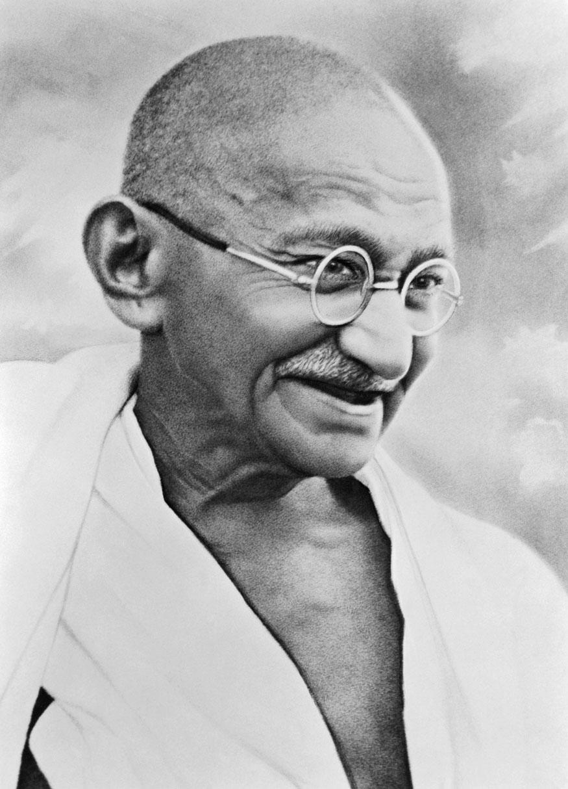
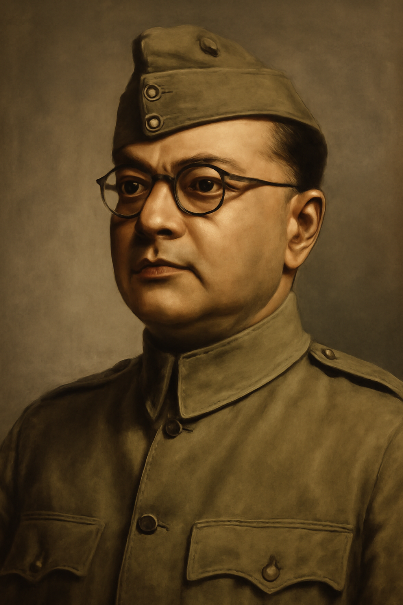

Important Leaders & Freedom Fighters
Mahatma Gandhi
Subhas Chandra Bose
Sardar Vallabhbhai Patel

Bhagat Singh

Lala Lajpat Rai

Jawaharlal
Nehru

Chandra Shekhar Azad

Maulana Abul
Kalam Azad

Rani Lakshmibai

Savitribai Phule

Capt.
Laxmi Sehgal